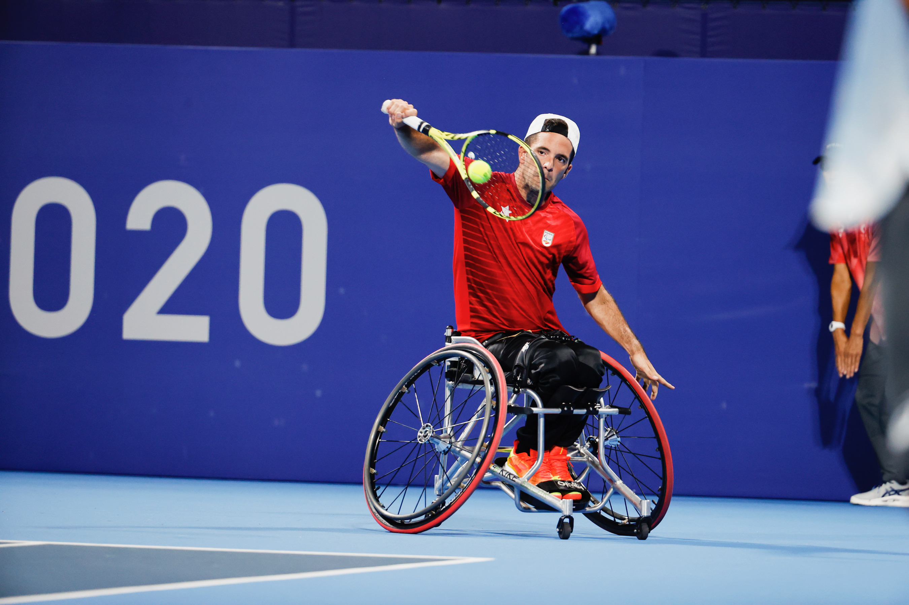

Fotos y Videos
Galería de fotos y videos de ediciones anteriores disponibles pronto.
.jpg)
Celebrando la superación, solidaridad e innovación en salud
Porque hay historias que inspiran y personas que transforman
Objetivo de la gala: El reconocimiento a personas, instituciones y proyectos que inspiran y transforman en el ámbito de la salud y el bienestar.
Carácter benéfico del evento: Todos los fondos recaudados irán destinados a asociaciones seleccionadas por cada uno de nuestros premiados.
Valores que representa el evento: Superación, solidaridad, innovación y ciencia.
Hay un total de 5 premiados en diferentes áreas y un premio especial.
Tenista profesional en silla internacional, miembro del equipo nacional de tenis desde 2018 y ejemplo de esfuerzo, superación y constancia
Catedrática de Anatomía y Embriología Humana de la Universidad de Murcia, referente en investigación en neurociencia y presidenta de la Real Academia de Medicina de la Región de Murcia.
Congregación fundada por Santa Teresa de Calcuta, que ofrece apoyo a madres solteras y sus hijos, mujeres maltratadas o que son víctimas de violencia de género.
Empresario y referente solidario en la Región de Murcia, cuya trayectoria se ha caracterizado por su compromiso constante en causas sociales y su apoyo a la investigación.
Espacio de apoyo y acogida para familias de niños hospitalizados, con más de 1.100 familias atendidas.
Médico y presidente de la fundación española para la lucha contra la leucemia. Impulsor de iniciativas y trasplante de médula ósea y apoyo a niños enfermos de cáncer y sus familias, con proyectos en España y un albergue de acogida en Guayaquil (Ecuador).
Detalles de la programación oficial de la gala:
Los patrocinadores que han hecho posible esta gala son:
Galería de fotos y videos de ediciones anteriores disponibles pronto.
Compra tus entradas pinchando aquí
Para hacer una donación puede donar al siguiente número de cuenta